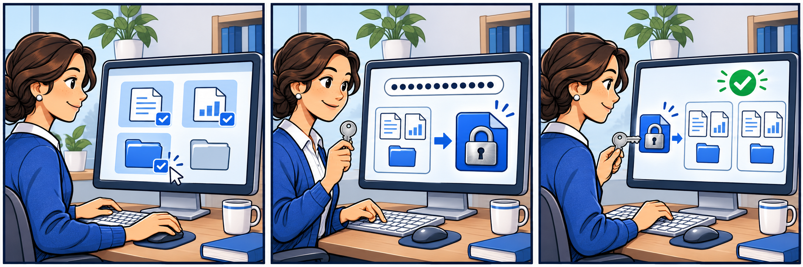

Browser: files, folders, and text stay on your device. No account, content upload, or tracker.
Native desktop: drop to ZIP, encrypt and verify beside the original. Windows, macOS and Linux; no browser or internet connection required.
Encryption, without the mystery
Keep the file. Keep the key.
Encryption turns readable information into a protected package. Your password derives the cryptographic key that lets you turn it back. No physical key is needed.

Choose what matters
Drop files or folders, or type a note. There are no mode tabs; CipherEnc processes everything on your device.
Lock it with your password
Use a long, unique password. CipherEnc compresses files, encrypts them, verifies the result, and saves a .cen package. Keep the password safe.
Unlock and check
Drop the encrypted package and enter its password. Integrity checks run automatically. The desktop can then ask about best-effort shredding; the browser keeps originals.
Inside the native app
Drop, protect, restore.
One drop box and one text area. CipherEnc detects whether to encrypt or decrypt, checks integrity automatically, and saves file archives beside their originals.
Android 8+ with an up-to-date system WebView. Bundled workspace; no external browser or internet connection needed. Evaluation build; device testing is pending.
Android, iPhone, or iPad?
Open the browser tool in a current mobile browser. File and text encryption work without installing an app. Decryption restores the original file, and encrypted text can be copied on screen. Folder selection and direct folder restoration depend on your browser and system picker.